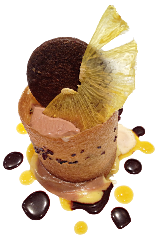
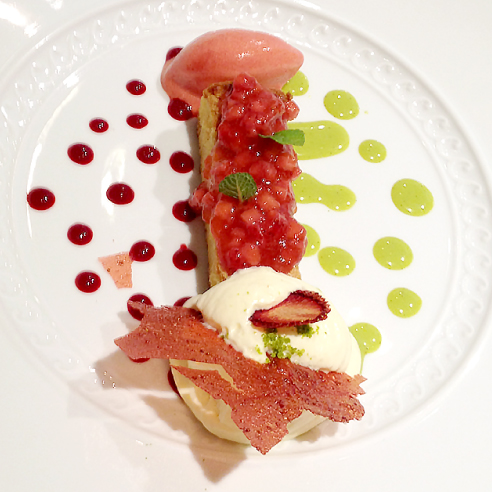

<!DOCTYPE html>
<html>

<head>
<meta charset="UTF-8">
<title>ダイナミックな動きのスライド</title>

<link rel="stylesheet" href="css/common.css" type="text/css">

<script src="js/jquery.min.js"></script>
<script src="js/jmpress.js"></script>
</head>

<body>
<!-- 画面下ナビゲーション -->
<nav>
<ul class="nav">
<li><a href="#home" class="go">TOP</a></li>
<li><a href="#depth">奥行き</a></li>
<li><a href="#pan">パン</a></li>
<li><a href="#rotation">回転</a></li>
<li><a href="#scaling">拡大縮小</a></li>
<li><a href="#image">画像</a></li>
<li><a href="#usually">普通のスライド</a></li>
<li><a href="#prev" class="go">戻る</a></li>
<li><a href="#next" class="go">次へ</a></li>
</ul>
<div class="hint">方向キーまたはスペースで操作できます。ESCでスライド解除。</div>
</nav>

<article class="jmpress">

<!-- TOP -->
<section id="home" data-scale="1">
<h1>JMPRESS.JS</h1>
<p>JMPRESS.JSのサンプルです。</p>
<ul class="home-nav">
<li><a href="#depth">奥行き</a></li>
<li><a href="#pan">パン</a></li>
<li><a href="#rotation">回転</a></li>
<li><a href="#scaling">拡大縮小</a></li>
<li><a href="#image">画像</a></li>
<li><a href="#usually">普通のスライド</a></li>
</ul>
</section>

<!-- 奥行き -->
<section id="depth" data-z="2000">
<h1><strong>奥行き</strong>表現！！</h1>
</section>

<!-- パン -->
<section id="pan" data-y="600" data-x="-700" data-z="1000">
<h1><strong>pan</strong>をすることができるし、</h1>

<!-- 回転 -->
<section id="rotation" data-y="100" data-x="-400" data-rotate="90">
<h2><strong>回転</strong>もできちゃう。</h2>
</section>

</section>

<!-- 拡大縮小 -->
<section id="scaling" data-y="700" data-x="-900" data-rotate="180" data-scale=".2">
<h1><strong>スケール変更</strong>だって思いのまま！</h1>
</section>

<!-- 画像貼り付け -->
<section id="image" data-y="700" data-rotate="180" data-scale=".5">

<p>そして、モチロン</p>
<h1><span>画像</span>も<span>貼</span>れちゃう</h1>
</section>

<!-- つなぎ -->
<section id="more" data-y="1115" data-rotate="180">
<h1>さぁ、どんどんつくってみよう！</h1>
</section>

<!-- 普通のスライド -->
<section id="usually" data-x="-1000" data-y="-500">
<h1>普通<span>の</span>スライド風にもできます。</h1>

<ul>
<li><a href="#home">TOP</a></li>
<li><a href="#depth">奥行き</a></li>
<li><a href="#pan">パン</a></li>
<li><a href="#rotation">回転</a></li>
<li><a href="#scaling">拡大縮小</a></li>
<li><a href="#image">画像</a></li>
<li><a href="#usually">普通のスライド</a></li>
</ul>

<p>ランダムな配置では無くて、たとえばX方向のみにずらして配置していくと、ノーマルなイメージのスライドにすることもできます。</p>
</section>

</article>

<script>

$.jmpress('register', 'demo', function() {
var jmpress = this;

//#homeでの操作ヒント表示、各ステップでのナビ表示
var setActive = function(step) {
if ($(step).attr('id') === 'home') {
$('.nav').fadeOut();
$('.hint').stop(true, true).delay(3000).fadeIn();
} else {
$('.nav').fadeIn();
$('.hint').stop(true, true).fadeOut();
}
};

// sectionがスライドの単位
var config = {
stepSelector: 'section',
viewPort: {
width: 1000,
maxScale: 1
},
setActive: setActive
};

// escキーでJMPRESSをON/OFF（ASCIIコードの10進で27=esc）
$(this).jmpress('toggle', 27, config, true);


// 内部リンク処理する
$('.go').click(function(e) {
e.preventDefault();
$(jmpress).jmpress($(this).attr('href').slice(1));
});
});

// jmpress開始
$('.jmpress').jmpress('demo');

</script>


</body>
</html>
